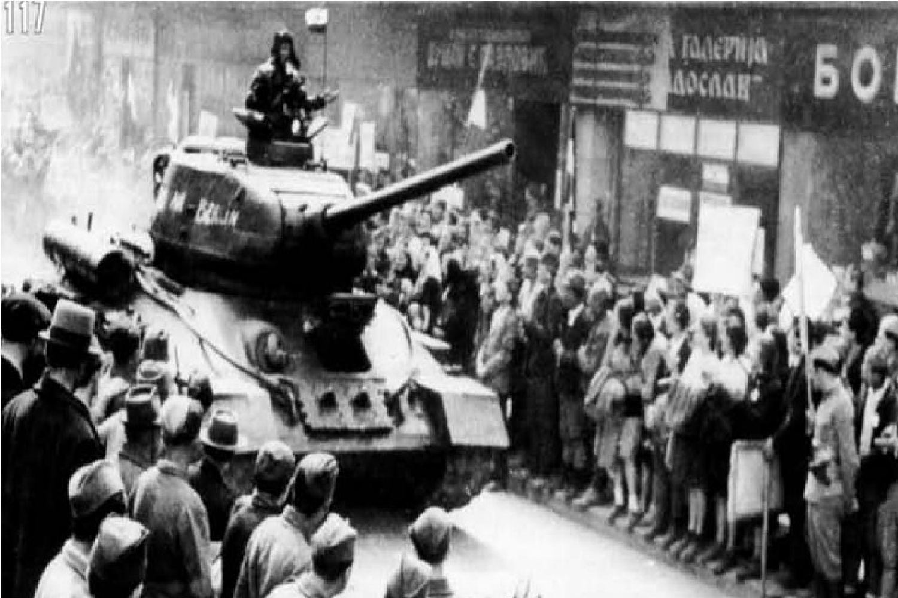
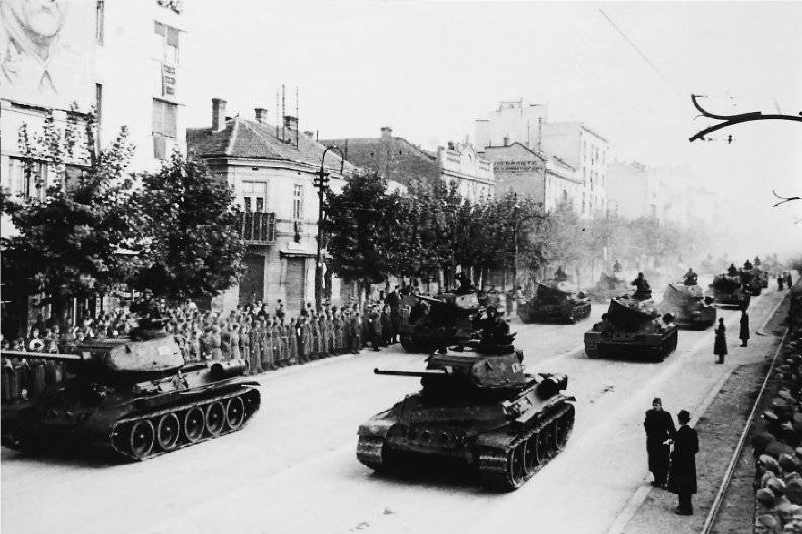
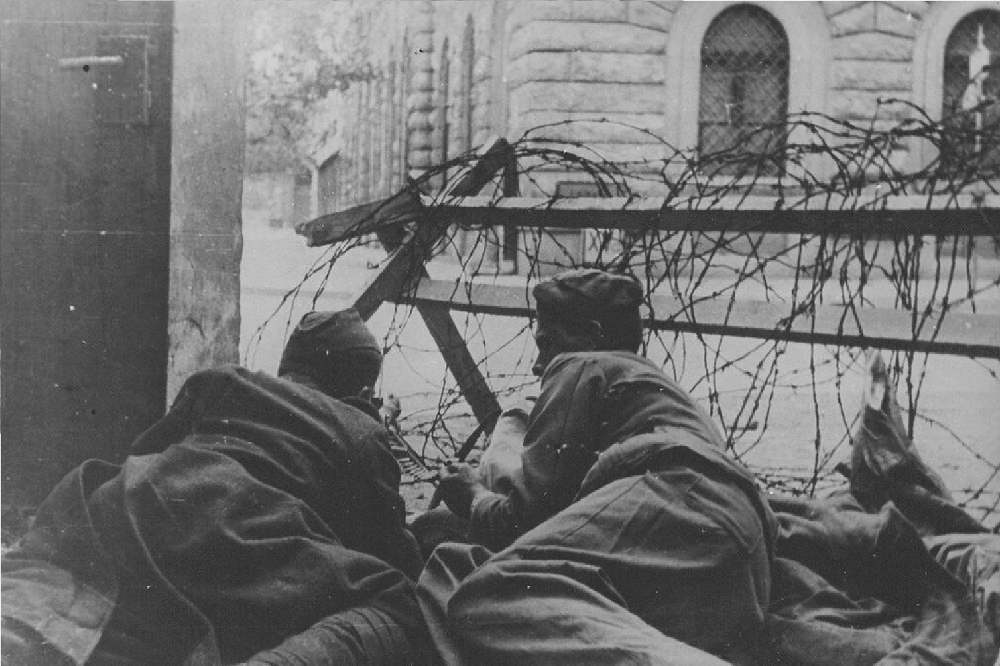

1944
|  |
|
|
Операция была тщательно спланирована, учитывая различные факторы, такие как расположение войск, погодные условия и моральное состояние населения. Основные силы партизан были сосредоточены для удара по противнику. Наступательные действия начались с атак на ключевые позиции немцев и коллаборационистов в окрестностях Белграда. Партизаны использовали различные тактики, включая внезапные нападения и окружение противника. Тито и его команда обеспечили хорошую координацию действий между различными частями партизан, включая регулярные сообщения и поддержку местного населения. |
 |
|  |
К концу ноября 1944 года большинство немецких и коллаборационистских сил были выбиты из столицы. Белград был освобожден, что стало символическим моментом для всей Югославии и привело к укреплению партизанского движения. Белградская операция продемонстрировала способность партизан эффективно организовываться и действовать против хорошо укрепленных оккупационных сил. Освобождение города также способствовало дальнейшему распространению партизанской активности по всей Югославии и окончательной победе над фашистскими режимами в регионе. |